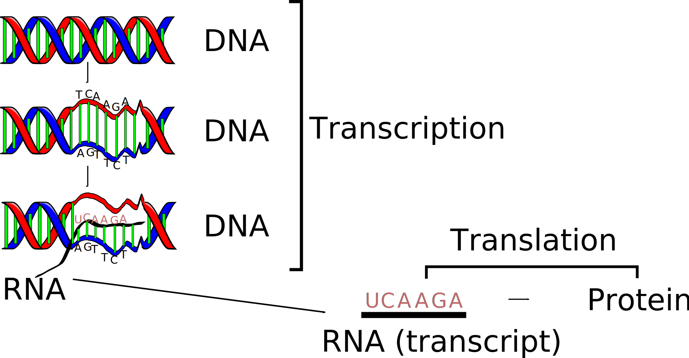
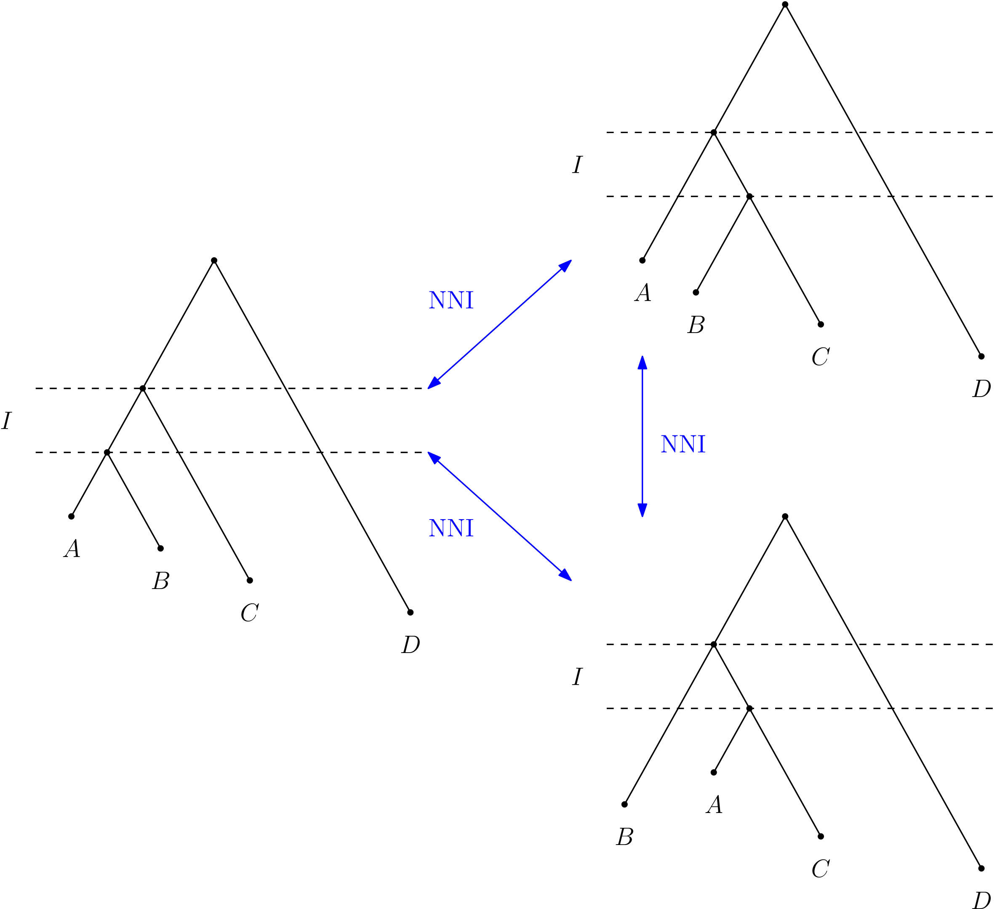
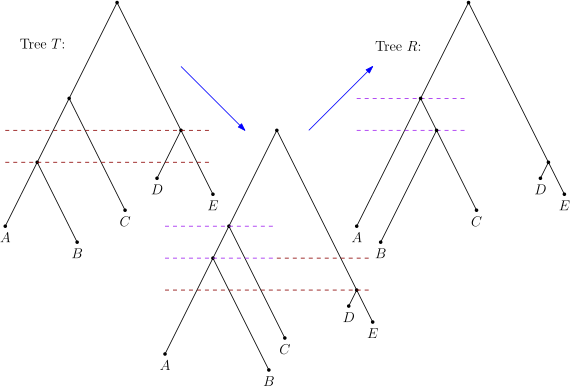

Somatic Phylogenomics
Alex Gavryushkin

6 July 2020
Phylogenetic inference


Image source: Wikipedia
Why is it suddenly a thing?

Molecular biology: crash course
WARNING
Next slide contains real tumour images

Alves, Joao, Sonia Prado-Lopez, Jose Manuel Cameselle-Teijeiro, David Posada. "Rapid evolution and biogeographic spread in a colorectal cancer" bioRxiv (2019).
Tumour evolution
Jahn, Katharina, Jack Kuipers, and Niko Beerenwinkel. "Tree inference for single-cell data." Genome biology 17.1 (2016): 86.
Timing tumour evolution
Lote, H., I. Spiteri, L. Ermini, A. Vatsiou, A. Roy, A. McDonald, N. Maka, et al. 2017. "Carbon Dating Cancer: Defining the Chronology of Metastatic Progression in Colorectal Cancer." Annals of Oncology 28 (6): 1243–49.
Main computational challenge
Trees are many, very many
- Gavryushkin, Alex, and Alexei J. Drummond. "The space of ultrametric phylogenetic trees." Journal of Theoretical Biology 403 (2016): 197-208.
- Stadler, Tanja, Timothy G. Vaughan, Alex Gavryushkin, Stephane Guindon, Denise Kühnert, Gabriel E. Leventhal, Alexei J. Drummond.
"How well can the exponential-growth coalescent approximate constant-rate birth-death population dynamics?"
Proc. R. Soc. B. Vol. 282. No. 1806. The Royal Society, 2015.


tau-space

Geodesic in time-tree space
- Gavryushkin, Alex, and Alexei J. Drummond. "The space of ultrametric phylogenetic trees." Journal of Theoretical Biology 403 (2016): 197-208.
- Gavryushkin, Alex, and Alexei Drummond. tauGeodesic. Mar. 2015. doi: 10.5281/zenodo.47152. https://github.com/gavruskin/tauGeodesic

- Gavryushkina, Alexandra, Tracy A. Heath, Daniel T. Ksepka, Tanja Stadler, David Welch, and Alexei J. Drummond. "Bayesian total-evidence dating reveals the recent crown radiation of penguins." Systematic Biology 66.1 (2016): 57-73.
- Gavryushkin, Alex, and Alexei Drummond. tauGeodesic. Mar. 2015. doi: 10.5281/zenodo.47152. https://github.com/gavruskin/tauGeodesic

t-space: simplex

t-space: 2D

t-space: 3D

(Discrete) Timer-tree

Sampled ancestor tree
NNI graph
Why is this important?
- Tree search algorithms
- Model testing/selection and other simulation studies
Why is this hard?
Trees are many!
Discrete time-tree space
Sampled ancestor tree space
Trees at distance 2
Trees at distance 4

History of the NNI graph
- Over 25 year of work!
- Over 7 erroneous papers published!
What's wrong with the NNI graph?
-
The Split Theorem
-
The merge and sort trick
Merge and sort trick
Merge and sort trick
RNNI is free from all these!
- Split theorem. Tick.
- Merge and sort doesn't work. Tick
-
Efficient polynomial algorithm?
Acknowledgements
- Royal Society Te Apārangi: Rutherford Fellowships; Catalyst Fund
- Ministry of Business, Innovation, and Employment: Endeavour Fund; Data Science Platforms
- bioDS lab members
- Many collaborators